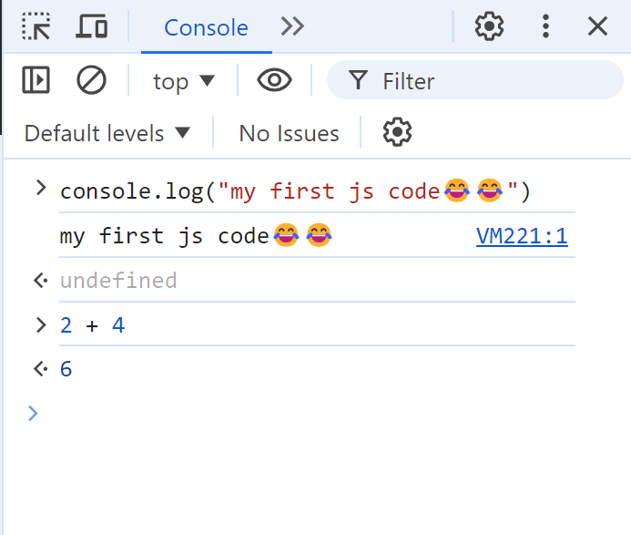

The Console in your browser's Developer Tools is an interactive environment where you can run JavaScript code directly. This tool acts as a REPL (Read-Eval-Print Loop), allowing you to experiment with JavaScript code in real-time. In this guide, we'll cover the basics of using the Console, including how to execute code, use autocompletion, view command history, and more.
Getting Started
Open DevTools:
Right-click on a webpage and select Inspect.
Alternatively, press Ctrl+Shift+J (Windows/Linux) or Command+Option+J (macOS) to open DevTools directly to the Console.
Focus on the Console:
If necessary, click within DevTools to give it focus.
Press Esc to open the Console if it's not visible.
Execute JavaScript:
Click in the Console and type a simple JavaScript expression, like 2 + 2. The Console will immediately display the result 4.

Features
Autocompletion
The Console helps you write complex expressions with autocompletion. This feature suggests possible completions for your code, which is especially useful for exploring new methods or properties.
Try Autocompletion:
Start typing doc. and press the arrow keys to highlight document.
Press Tab to auto-complete the term.
Continue typing, such as .body, and press Tab to see properties and methods available on document.body.
Console History
The Console keeps a history of commands for reuse:
View History:
Press the Up Arrow key to cycle through previously entered commands.
You can also type the beginning of a command to see earlier commands that match.
Last Result:
The special $_ variable holds the result of the last expression executed. For example, if your last command was 2 + 2, typing $_ will return 4.
Multiline Edits
By default, the Console only allows single-line commands. For multiline code, use Shift+Enter to start a new line without executing the current code.
Write Multiline Code:
Press Shift+Enter to create a new line within the Console.
The Console will recognize code blocks and indent them automatically.
Top-Level Await
The Console supports top-level await, allowing you to run asynchronous JavaScript directly without wrapping it in an async function.
The Console is a powerful tool for testing and debugging JavaScript. It provides immediate feedback, supports autocompletion, and allows you to run asynchronous code. Experiment with these features to enhance your development workflow.
For more advanced usage, explore how to interact with the DOM using the Console and other features provided by your browser's Developer Tools.